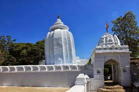

Leaning Temple of Huma


Leaning Temple of Huma
The Leaning Temple of Huma in India is one of only a very few leaning temples in the world.[1][2] It is located in Huma, a village situated on the bank of the Mahanadi, 23 km south of Sambalpur in the Indian state of Odisha. The temple is dedicated to the Hindu god Lord Bimaleshwar.
It is unknown if this structure is leaning by design or for another reason. Although the edifice leans, the pinnacle of the temple is perpendicular to the ground.
Architecture
The Bhairavi Devi temple is situated to the left of the main temple, and the Bhairo temple is situated to the right of the main temple. According to historical records, Ganga Vamsi Emperor Anangabhima Deva-III built this temple. The temple was rebuilt or renovated by King Baliar Singh (1660–1690 A.D.), the fifth Chauhan king of Sambalpur. The rest of the temples were built during the rule of King Ajit Singh (1766–1788 A.D.) of Sambalpur.
The temple is positioned on a rocky outcrop on the bank of the river Mahanadi. The reason for the leaning cannot be assumed to have been technical flaws at the time of construction. It is also not an easily acceptable idea that a weak foundation might have caused the leaning of the temple. There may perhaps have been interior displacement of the rocky bed on which it stands, either due to flood currents in the river Mahanadi, or earthquakes.
The plinth of the temple has deviated slightly from its original arrangement, and as a result, the body of the temple has tilted. This tilt has fascinated historians, sculptors and other researchers. The surprising thing is that the main temple is tilted in one direction, whereas the other small temples are tilted in other directions. Within the temple complex i.e. within the boundaries of temple, everything is in a tilted condition, including the boundaries themselves, and the villagers and priests says that the angle of inclination has not changed over last 40 or 50 years. The tilt may be due to a geological reason; the underlying rock may be uneven in structure. The angle of inclination of the tilt is 13.8 degrees.
Legend
The worship of Shiva is said to have been initiated by a milkman, who crossed the Mahanadi daily to a place on the bank where the underlying rock cropped out. Here he offered his dole of milk, which was immediately consumed by the rock. This miraculous circumstance led to inquiries, which ended in the construction of the present temple.
Annual fair
An annual fair takes place at the foothill of the temple in March every year on Shivratri. This fair attracts a huge crowd which includes foreign visitors. The Government of Odisha has proposed a hanging bridge to attract more tourists to the annual fair.[6] There is a special type of fish found here known as 'Kudo' fish; they are frequently fed by visitors. It is believed that if anyone was to catch the Kudo fish turns into stone by a curse, there is a stone statue of a woman at the temple who is cutting one of the Kudo fishes, it is said that she became stone by getting affected by the curse.
Gallery
i) Kapileswar temple & Bhubaneswar Temple
ii)Bhubaneswar temple
iii)Leaning Temple Huma